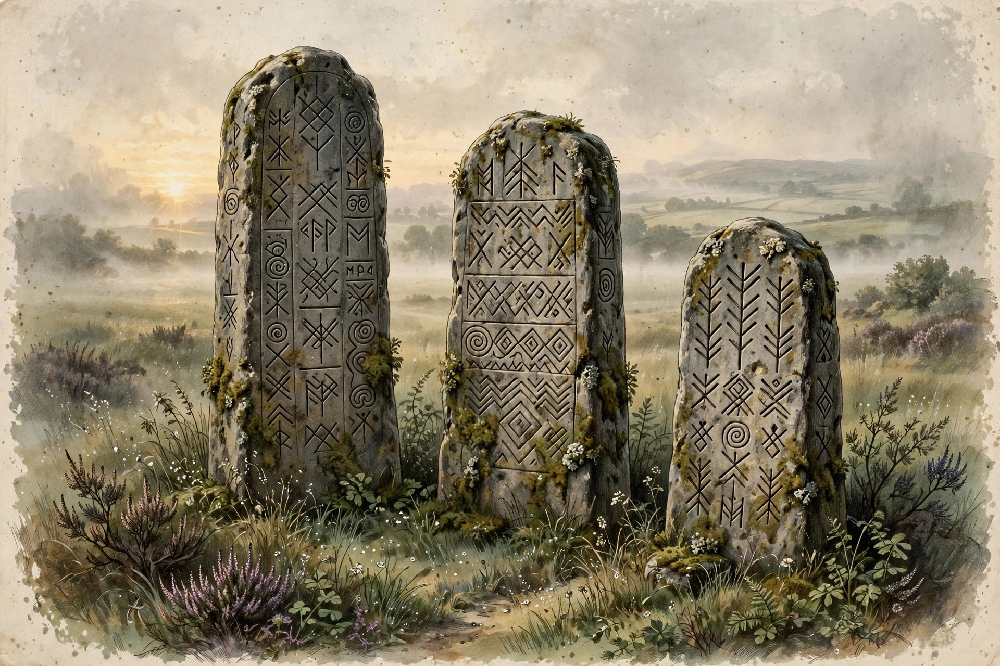

How to Read the Old English Alphabet

You open a page of Old English and the letters stop you. A word starts with þ, another ends with ð, and a third holds æ in the middle. What do you do when you meet letters that do not exist in modern English?
You sound them out, one by one. Every strange letter stands for a sound you already know. The Old English translation page can turn whole passages into modern English, but this guide teaches you to read the letters yourself.
Start with sounds, not spellings
Old English was written with the Latin alphabet, plus a few extra letters. Christian missionaries brought the Latin alphabet to England in the late 500s. Scribes kept the Roman letters and added signs for English sounds that Latin lacked. That is why the page looks familiar and foreign at the same time.
The trick is to stop seeing the odd letters as puzzles. Each one is just a sound written down. Once you know five letters and the runes, most Old English words start to open up.
You do not need to learn grammar first. You only need to match each sign to its sound.
Thorn and eth: the two letters for th
Thorn (þ) and eth (ð) both stand for the "th" sound. Thorn looks like a p with an extra stroke. Eth looks like a d with a line through its stem. Scribes used the two signs for both "th" sounds, the soft one in "this" and the hard one in "thin".
In practice, scribes swapped the two signs freely. You will see þ at the start of words more often, and ð in the middle or at the end. The pattern is a habit, not a rule. So read both as "th" and let the word itself tell you which sound fits.
Try þæt, which means "that". Try þing, which means "thing". Try oðer, which means "other". Try eorðe, which means "earth".
Ash: the vowel between a and e
Ash (æ) is a single vowel, not two letters squeezed together. It sounds like the "a" in "cat". Old English writers needed it because English had a vowel sound that Latin spelling did not cover. You will see it in some of the most common words.
The most famous example opens the Old English poem Beowulf. Its first word is Hwæt, which means something like "lo" or "listen". Another everyday example is æppel, which means "apple". Once you hear ash as the "a" in "cat", both words read easily.
Wynn and yogh: the lookalikes
Wynn (ƿ) is the letter that trips up most new readers. It looks like a p, but it sounds like "w". It came from a rune of the same name, and scribes borrowed it for the "w" sound. Later writers dropped it and wrote "w" instead, which is why it vanished from modern spelling.
A good example is ƿæter, which means "water". If you read the first sign as "w", the word unlocks at once. That is the whole skill with wynn. Ignore what the letter looks like and trust its sound.
Yogh (ȝ) is the last letter to learn, and it is a late arrival. It grew common in Middle English writing, and readers meet it in editions of older texts. It can sound like the "y" in "yet" or like a soft "g". The example to remember is ȝear, which means "year".
Why some letters vanished
Printing changed the alphabet more than any king or scholar did. Early printers had limited sets of type, and some English letters were not in them. Thorn was often printed as "y", which is why old signs read "ye olde" for what was really "the olde".
The "th" pair took over from thorn and eth, and "w" took over from wynn. The letters did not die because the sounds died. They died because the printing press had no room for them.
The character chart
Here is the whole set in one place. Each row gives the letter, its name, its sound, and one real example word that uses it. Keep this chart beside you while you read, and the strange signs will soon feel ordinary.
| Letter | Name | Sound | Example word | Meaning |
|---|---|---|---|---|
| þ | thorn | th, as in "thin" or "this" | þæt | that |
| ð | eth | th, as in "this" or "thin" | oðer | other |
| æ | ash | a, as in "cat" | æppel | apple |
| ƿ | wynn | w, as in "water" | ƿæter | water |
| ȝ | yogh | y, as in "yet" | ȝear | year |
Five letters carry most of the surprise in an Old English page. Learn their sounds and you can sound out words even before you know what they mean. If a word still puzzles you, run it through the Old English converter and compare the result with your own reading.
The runes: the Anglo-Saxon futhorc
Runes are the second alphabet you may meet, and they look nothing like Latin letters. The Anglo-Saxon runes are called the futhorc, after the sounds of the first six runes: f, u, th, o, r, and c. The early set held 24 runes, and the Anglo-Saxons added more until the set reached 28 and later up to 33 signs.
Runes were cut into stone, metal, and wood, not written in books. Everyday writing used the Latin letters from the sections above. So you will meet runes on crosses, coins, and memorial stones more than in manuscripts. Each rune had a name, and the names were ordinary words.
The rune ᚠ was called feoh, which means wealth or cattle. The rune ᚢ was called ur, which means aurochs, a wild ox. The rune ᚦ was called thorn, the same name as the letter þ. The rune ᚹ was called wynn, which means joy, and it is where the letter ƿ came from.
You do not need to memorize the whole futhorc to enjoy an inscription. Learn the first six rune names and the shapes of feoh, ur, and thorn. That small set lets you spot the start of many inscriptions and guess what kind of text you are looking at.
An Old English poem gives a short verse for each rune. The verses are one reason we know the rune names today.
Try it: five words to read aloud
Reading works best by doing it, so try these five words aloud. Say þæt and think "that". Say æppel and think "apple".
Say ƿæter and think "water". Say eorðe and think "earth". Say ȝear and think "year".
Read each word slowly and listen for the sound each sign makes. Do not worry if your first try sounds rough. Old English spelling was never fully fixed, so scribes spelled the same word more than one way. Your ear will catch the pattern faster than your eye will.
Where to go next
Once the letters feel familiar, whole lines start to move faster. You will still meet words you do not know, and that is normal. The alphabet was only the first lock on the door, and you have just opened it.
Keep this chart close for your first few readings. Return to it when a letter stalls you, and sound the word out before you look it up. You can find more language tools at Quirky Translators.
Old English looks hard only until the letters turn into sounds. After that, the hard part is vocabulary, not the alphabet. That is a fair trade, and it is why the alphabet is the best place to start.
A note on the examples. The examples in this article are given for illustration only. They are not outputs of the tool.